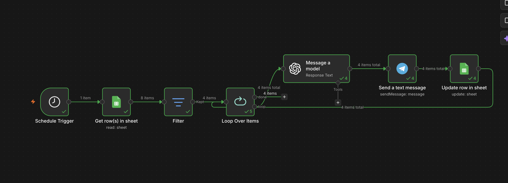

A rule based re engagement prototype built around Praxy's own stated growth goal, testing whether a multi week career journey could catch a stalled user before they disappear from it entirely.
Domain
PLG Growth / User Activation
Core Stack
n8n • OpenAI • Google Sheets • Telegram
Problem Statement
Praxy's founder has publicly said the priority is scaling to 1 lakh users through product led growth. Praxy's own product describes a multi week career journey (mapping, plan, target list, mock interviews, applications), and funnels shaped like that, several stages spread over several weeks, tend to lose users at the transitions between stages, not just at signup.
I didn't have visibility into Praxy's actual usage data, so I couldn't confirm how big that drop off is. What I could say is that it's a structural risk built into the funnel Praxy has already described publicly, and it felt worth exploring through a working prototype rather than a written pitch alone.
What I Designed
An Activation Drop off Rescue Agent: a workflow that checks each user's current stage against how long they've been inactive, and generates a personalized nudge for anyone who's gone quiet before reaching the finish line.
Mapped
→
Plan Locked
→
Target List
→
Mock Interview
→
Applications
Two filters decide who actually gets nudged:
Inactive more than 2 days: recent users are left alone, to avoid over messaging someone who's still actively in the middle of a session.
Not already at Applications: users who are actively applying don't need a re engagement nudge, they're already doing the thing.
"This case study was built as part of my interview process with Praxy."
How It Works
Built as an n8n workflow, structured in seven steps.

[ Image Error: Praxy_N8n_Workflow.png not found ]
Trigger: a schedule node runs the check automatically, daily in a production setup, every minute in this prototype so it's easier to demo.
Data Collection: a Google Sheets node reads each user's stage, last active date, goal, and language preference. In this prototype, the sheet holds invented sample data shaped like Praxy's real user base; in production, this node would point to Praxy's actual conversation and usage logs instead.
Filtering: a Filter node keeps only users who are both inactive and not yet done.
Looping: a Loop Over Items node processes each flagged user individually, so every message is personalized rather than one broadcast sent to everyone.
Message Generation: an OpenAI node generates a short, warm nudge referencing the user's specific goal and stage, in their preferred language.
Delivery: a Telegram node sends the message.
Logging: a Google Sheets node stamps last_nudged so no one gets messaged twice in the same cycle.
Key Design Decisions
Telegram instead of the WhatsApp Business API: the WhatsApp Business API needs Meta business verification and typically a Twilio or BSP setup, which takes days and isn't something I could access as an external candidate. Telegram's bot API is free and instant to set up, and follows the same underlying pattern (webhook trigger, stored user context, outbound message), so the logic transfers directly to WhatsApp in a real deployment; only the delivery node would change.
Rule based stage and recency logic over a predictive model: a transparent trigger (days inactive plus current stage) is enough to catch the obvious leak point, and doesn't require historical churn data I didn't have access to.
One at a time processing over batch messaging: looping per user, rather than sending one bulk message, is what lets each nudge reference the person's actual goal instead of reading as automated.
Two day inactivity threshold, stated as a hypothesis: this number is a reasonable starting point for a fast moving PLG product, not one derived from Praxy's real engagement data. I'd want to validate it against actual usage patterns before treating it as final.
Also Found While Dogfooding Praxy
While testing Praxy myself across WhatsApp and a follow up call, I noticed a few specific UX issues worth flagging, not as the core prototype, but as evidence I tested the product end to end like a user, not just from the landing page.
The same script plays out identically across WhatsApp and the call, with no variation for the channel.
Switching from WhatsApp to a call re asks onboarding questions that were already answered.
No language preference is captured upfront, despite the product likely serving non English first users.
After a channel or language switch, Praxy loses context from earlier in the conversation, which reads more like a session state bug than a design choice.
The Career Canvas is delivered as an image rather than a PDF, which makes it harder to save, search, or forward professionally.
What This Demonstrates
Starting from a real, stated business goal and reasoning through where it's most likely to break in practice.
Building something that actually runs rather than stopping at a slide.
Working with tools like n8n that fit how a lean team like Praxy's builds internal automation today.